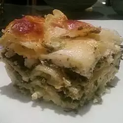

Lasagna

This is a simple recipe for pesto lasagna
Ingredients
- lasagna noodles
- olive oil
- onion
- spinach
- basil pesto
- ricotta cheese
- egg
- salt
- black pepper
- nutmeg
- mozzarella cheese
- pasta sauce
- Parmesan cheese
Steps
- Preheat oven to 175 degrees
-
Boil lasagna noodles in salted, boiling water for 8/10 min until al
dente
- saute onion in olive oil until tender, stir spinach and pesto
- In large bowel mix ricotta, egg, salt, pepper and nutmeg
-
In greased baking dish, layer noodles then spinach mixture followed by
ricotta mixture, sprinkle mozzarella cheese. Repeat the layers. Spread
sauce on top and sprinkle with Parmesan
- Cover with foil and bake in the preheated oven for 45 to 55 min
Recipe from.
Back to Recipes